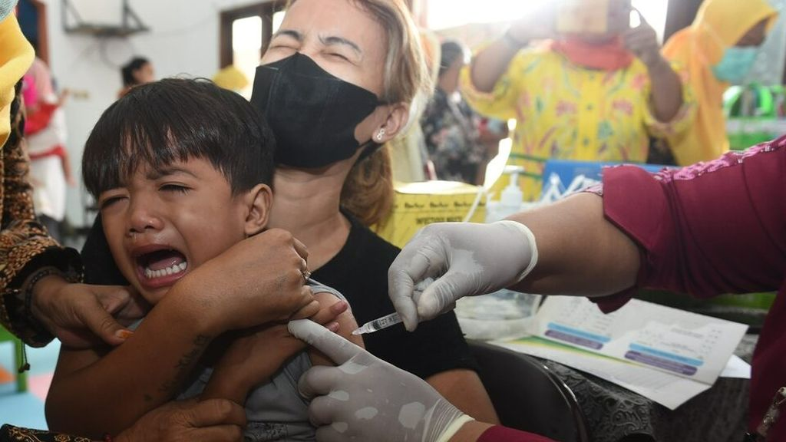
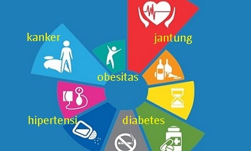

.png)
Di sini kita akan menjelajahi topik-topik penting seputar Sustainable Development Goals (SDGs), kerjasama internasional, dan bagaimana Pancasila menjadi pedoman kita dalam mencapainya.

Halo! Nama saya Natalia Viola Andina Nugroho, atau biasa dipanggil Viola. Saya berasal dari Kelas IX-2 no Absen 27!, dan di website ini, saya ingin berbagi pengetahuan dan ide-ide tentang bagaimana kita semua bisa berkontribusi untuk masa depan yang lebih baik melalui SDGs,kerjasama antarnegara, dan tentunya dengan mengintegrasikan nilai-nilai Pancasila dalam setiap langkah kita.
SDGs adalah serangkaian tujuan yang dicanangkan oleh PBB untuk menciptakan dunia yang lebih adil, sejahtera, dan berkelanjutan. Terdapat 17 tujuan utama, mulai dari menghapus kemiskinan hingga memastikan kualitas pendidikan yang inklusif. Semua negara di dunia, termasuk Indonesia, berkomitmen untuk mencapainya. Mari kita lihat bagaimana kita bisa terlibat dalam tujuan mulia ini!
Baca Lebih Lanjut tentang SDGsKerjasama antarnegara menjadi kuncidalam mewujudkan SDGs. Ada banyak bentuk kerjasama, mulai dari Bilateral (antara dua negara), Regional (antarnegara dalam satu kawasan), hingga Multilateral (antarnegara di seluruh dunia). Di halaman ini, kita akan membahas beberapa contoh nyata bagaimana negara-negara bekerja sama untuk mencapai tujuan bersama, seperti mengurangi perubahan iklim dan meningkatkan kesehatan global.
Pelajari Tentang Kerjasama InternasionalPancasila tidak hanya menjadi dasar negara kita, tetapi juga landasan nilai yang relevan dalam membangun hubungan internasional yang lebih baik. Nilai-nilai dalam Pancasila seperti **keadilan sosial**, **persatuan**, dan **kerjasama** sangat selaras dengan tujuan SDGs, yang mengutamakan kemanusiaan dan kesejahteraan untuk semua.
Pelajari Lebih Lanjut tentang PancasilaDengan berpegang pada **SDGs**, berkolaborasi dalam **kerjasama internasional**, dan mengikuti **nilai-nilai Pancasila**, kita bisa membangun masa depan yang lebih berkelanjutan dan damai untuk dunia ini. Saya percaya, setiap dari kita memiliki peran untuk mewujudkan perubahan positif! 🌍💪
SDGs (Sustainable Development Goals) adalah sebuah rencana global yang disepakati oleh negara-negara di dunia untuk menciptakan keseimbangan dalam pembangunan. SDGs terdiri dari 17 tujuan utama yang bertujuan untuk mengakhiri kemiskinan, melindungi planet, dan memastikan kesejahteraan bagi semua orang pada tahun 2030. Secara singkat, SDGs adalah upaya bersama untuk menciptakan dunia yang lebih baik bagi generasi sekarang dan masa depan. 🌱
SDGs ke-3 berfokus pada tujuan untuk menjamin kehidupan yang sehat dan mendukung kesejahteraan bagi semua orang di segala usia. Hal ini sangat penting untuk menciptakan masyarakat yang sehat dan produktif. 🏥
 |
Pelayanan Kesehatan 🏥Fokus pada penurunan angka kematian ibu dan anak, serta peningkatan gizi bayi dan ibu hamil. 👶🏽🤰🏽 |
|  |
Imunisasi Massal 💉Memberikan vaksinasi untuk mencegah penyakit seperti polio, campak, dan hepatitis. 🤧🛑 |
 |
Akses Air Bersih 💧Penyediaan air bersih dan sanitasi yang layak untuk mencegah penyakit. 🚰 |
|  |
Pencegahan Penyakit 💪🏽Melawan penyakit tidak menular seperti diabetes dan hipertensi melalui edukasi dan skrining dini. 🩺🥦 |
SDGs ke-3 memiliki berbagai program penting yang bertujuan untuk meningkatkan kesehatan dan kesejahteraan bagi semua usia:
Target: Menurunkan rasio kematian ibu global menjadi kurang dari 70 per 100.000 kelahiran hidup pada tahun 2030. Program yang dilakukan meliputi pelatihan bidan, tenaga kesehatan, dan penyediaan akses layanan kesehatan ibu hamil dan pasca melahirkan, terutama di daerah terpencil.
Memberikan vaksinasi untuk mencegah penyakit menular seperti polio, campak, dan hepatitis. Fokus pada cakupan imunisasi yang lebih luas di wilayah terpencil.
Penyediaan air bersih dan sanitasi yang layak untuk mencegah penyebaran penyakit menular. Termasuk pembangunan fasilitas air di pedesaan.
Melawan penyakit seperti diabetes, hipertensi, dan kanker melalui edukasi, skrining dini, dan perubahan pola hidup yang lebih sehat.
Indonesia melakukan berbagai kerja sama bilateral dengan negara-negara maju dan berkembang untuk meningkatkan layanan kesehatan nasional. Beberapa isu global dan lokal yang relevan terkait SDGs ke-3 meliputi:
Kerja sama internasional adalah kolaborasi antara negara-negara di dunia untuk mencapai tujuan bersama, salah satunya dalam rangka mencapai SDGs, khususnya pada tujuan SDGs ke-3 yang berkaitan dengan kesehatan dan kesejahteraan. Dalam upaya ini, negara-negara bekerja sama melalui berbagai inisiatif, seperti bantuan kemanusiaan, transfer teknologi, dan kebijakan kesehatan global.
Indonesia bekerja sama dengan beberapa negara untuk mendukung pencapaian SDGs ke-3, terutama di bidang kesehatan dan kesejahteraan. Berikut adalah contoh-contoh kerjasama bilateral yang penting dalam upaya tersebut.

Indonesia dan Jepang bekerja sama dalam bidang kesehatan dengan fokus pada teknologi medis, serta pengembangan rumah sakit di daerah-daerah terpencil.
Melalui program-program seperti 'Australia-Indonesia Health Program', kedua negara fokus pada peningkatan kualitas layanan kesehatan di Indonesia, termasuk pelatihan tenaga medis dan pengembangan rumah sakit.
Kerja sama antara Indonesia dan Amerika Serikat meliputi program pencegahan penyakit menular, serta akses terhadap vaksin dan obat-obatan penting.
Indonesia terlibat aktif dalam berbagai kerja sama regional untuk meningkatkan kesehatan dan kesejahteraan masyarakat di kawasan Asia Tenggara dan Asia Pasifik. Berikut adalah contoh nyata kerja sama yang mendukung pencapaian SDGs ke-3:
Indonesia, sebagai bagian dari ASEAN, berkomitmen untuk meningkatkan sistem kesehatan di Asia Tenggara melalui kerjasama yang mendukung program vaksinasi, pencegahan penyakit menular, dan penguatan kapasitas layanan kesehatan.
Dalam kerangka APEC, Indonesia bekerja sama dengan negara-negara Asia Pasifik untuk mengatasi masalah kesehatan global seperti pandemi, peningkatan akses kesehatan, dan pemajuan kebijakan kesehatan berbasis bukti.
Kerjasama yanh bertujuan untuk memperkuat kapasitas negara-negara di kawasan Samudra Hindia dalam menghadapi ancaman kesehatan. Indonesia berkontribusi dalam penyediaan fasilitas kesehatan darurat untuk negara-negara pulau kecil
Kerja sama multilateral melibatkan banyak negara yang bekerja sama dalam forum internasional untuk mencapai tujuan kesehatan dan kesejahteraan bagi semua. Beberapa contoh konkret dari kerja sama multilateral Indonesia dalam konteks SDGs ke-3 antara lain:

Indonesia berpartisipasi aktif dalam program-program yang dipimpin oleh WHO, seperti pengendalian penyakit menular dan peningkatan sistem kesehatan di negara berkembang.
Melalui UNICEF, Indonesia turut mendukung upaya kesehatan ibu dan anak, vaksinasi, serta pendidikan kesehatan di daerah-daerah tertinggal.
Indonesia bekerja sama dengan Global Fund untuk memerangi HIV/AIDS, malaria, dan tuberculosis melalui pendanaan bersama dan pengembangan kapasitas sistem kesehatan.
✨ SDGs ke-3 tentang Kesehatan dan Kesejahteraan memiliki hubungan yang erat dengan berbagai inisiatif dan kolaborasi internasional. Melalui kerja sama ini, negara-negara bersatu untuk mengatasi tantangan kesehatan global demi mewujudkan 🌟 kesehatan manusia yang lebih baik di seluruh dunia.
💡 Kerja sama internasional melalui organisasi seperti WHO berfokus pada upaya pencegahan penyakit, penyebaran vaksin, dan akses kesehatan yang lebih adil. Contoh konkret adalah inisiatif COVAX 🌐, yang menyediakan vaksin COVID-19 untuk negara-negara berkembang.
📈 Dengan bantuan teknis dan finansial, negara-negara berkembang mendapat dukungan untuk memperkuat sistem kesehatan. Program seperti USAID dan UNICEF💙 membantu Indonesia meningkatkan cakupan vaksinasi hingga ke daerah terpencil.
⚖️ Kerja sama internasional membantu mengurangi kesenjangan kesehatan antara negara maju dan berkembang. Bantuan ini meliputi pendanaan, pelatihan, serta penyediaan obat-obatan dan vaksin untuk masyarakat miskin yang terpinggirkan.
🧠 Kolaborasi dalam penelitian internasional mempercepat pengembangan vaksin dan inovasi kesehatan lainnya. Program seperti Global Health Innovation Fund🚀 mendukung penelitian untuk menangani masalah kesehatan global dengan solusi yang inovatif.
🌐 Regulasi seperti International Health Regulations (IHR) memungkinkan negara-negara berbagi informasi penting tentang wabah penyakit 🔔 dan bekerja sama untuk mencegah ancaman kesehatan yang dapat berdampak secara global.
Terdapat beberapa mekanisme yang menghubungkan SDGs dan kerjasama internasional, yaitu:
Seperti PBB, yang mengkoordinasikan pencapaian SDGs di seluruh dunia.
Perjanjian internasional, seperti **Agenda 2030 untuk Pembangunan Berkelanjutan**, menjadi dasar kerjasama antarnegara.
Negara maju memberikan bantuan finansial untuk mendukung pencapaian SDGs, seperti dalam bidang kesehatan (SDG 3).
Kerjasama internasional dalam berbagi teknologi untuk mencapai SDGs, seperti energi terbarukan dan pendidikan.
Kerjasama antara sektor publik, swasta, masyarakat sipil, dan akademik dalam mencapai tujuan SDGs.
1. Ketuhanan Yang Maha Esa: SDGs mendorong kehidupan yang lebih sejahtera sesuai dengan amanah Tuhan, seperti mengatasi kemiskinan (SDG 1) dan menjaga kesehatan (SDG 3).
2. Kemanusiaan yang Adil dan Beradab: SDGs mengutamakan keadilan sosial, seperti SDG 10 tentang mengurangi ketidaksetaraan, sejalan dengan nilai kemanusiaan Pancasila.
3. Persatuan Indonesia: SDGs mengajak negara-negara bersatu untuk mencapai tujuan bersama, misalnya dalam mengatasi perubahan iklim (SDG 13), yang membutuhkan kerjasama internasional.
4. Kerakyatan yang Dipimpin oleh Hikmat Kebijaksanaan: Musyawarah dan diplomasi internasional dalam kerjasama untuk perdamaian global dan pengentasan kemiskinan sesuai dengan prinsip ini.
5. Keadilan Sosial bagi Seluruh Rakyat Indonesia: SDGs fokus pada keadilan sosial global, memastikan akses pendidikan, kesehatan, dan ekonomi bagi semua, mendukung nilai keadilan dalam Pancasila.
Kerjasama Bilateral: Kolaborasi antara dua negara untuk membangun hubungan baik, misalnya bantuan kemanusiaan antarnegara.
Kerjasama Regional: Negara-negara dalam kawasan yang bekerja sama, seperti ASEAN dalam menangani isu-isu ekonomi dan politik.
Kerjasama Multilateral: Kerjasama antar banyak negara dalam forum internasional seperti PBB untuk mencapai perdamaian dunia dan pembangunan berkelanjutan.
Melalui SDGs (Sustainable Development Goals), dunia berkomitmen untuk mencapai tujuan global yang berkelanjutan. Namun, pencapaian ini tidak bisa dilakukan oleh satu negara saja. Kerjasama Internasional, baik itu bilateral, regional, maupun multilateral, memainkan peran penting dalam mewujudkan perubahan yang positif, mulai dari pengentasan kemiskinan hingga perubahan iklim.
Yang lebih menarik, kita bisa menyambungkan semua ini dengan nilai-nilai Pancasila. Pancasila bukan hanya dasar negara Indonesia, tetapi juga dapat menjadi pedoman dalam menjalankan kerjasama internasional yang berlandaskan keadilan, kemanusiaan, dan perdamaian. Dengan mengedepankan prinsip musyawarah, gotong royong, dan keadilan sosial, kita dapat menciptakan dunia yang lebih baik dan lebih adil untuk generasi mendatang.
Seiring dunia semakin terhubung, kolaborasi antara negara dan penerapan nilai-nilai Pancasila dalam setiap langkah kita akan memastikan bahwa masa depan yang berkelanjutan dan penuh harmoni bukan sekadar impian, tetapi kenyataan yang bisa kita capai bersama. 🌍🤝
Sebagai upaya untuk mendukung tercapainya tujuan SDGs ke-3, berikut adalah saran yang dapat diimplementasikan:
1. Edukasi dan Promosi Gaya Hidup Sehat: Kampanye kesehatan melalui media sosial, seminar lokal, dan kerja sama dengan sekolah untuk mempromosikan pola makan sehat dan olahraga teratur.
2. Peningkatan Akses Layanan Kesehatan di Daerah Terpencil: Penerapan program mobile clinic, telemedicine, dan peningkatan insentif tenaga medis di wilayah terpencil.
3. Pencegahan dan Penanganan Stunting: Distribusi suplemen gizi, pelatihan kader posyandu, serta kerja sama dengan perusahaan pangan untuk menyediakan produk bergizi yang terjangkau.
4. Mitigasi Risiko Kesehatan Akibat Perubahan Iklim: Penyemprotan fogging secara berkala, edukasi kebersihan lingkungan, dan penyediaan alat deteksi dini untuk penyakit menular.
5. Peningkatan Kesadaran Kesehatan Mental: Pelatihan tenaga medis untuk deteksi gangguan mental, layanan konseling daring, dan penguatan komunitas dukungan.
6. Memperkuat Ketahanan Sistem Kesehatan Pasca Pandemi: Penguatan infrastruktur kesehatan, pelatihan kesiapsiagaan bencana, dan kebijakan mendukung produksi alat kesehatan lokal.
Setelah mempelajari lebih dalam tentang SDGs, Kerjasama Internasional, dan Pancasilasaya semakin memahami bahwa pencapaian tujuan pembangunan berkelanjutan tidak hanya membutuhkan tindakan dari satu negara saja, tetapi juga kerjasama antara negara-negara di seluruh dunia. Dalam dunia yang semakin terhubung ini, kolaborasi antarbangsa sangat diperlukan untuk menyelesaikan tantangan global seperti kemiskinan, ketidaksetaraan, dan perubahan iklim.
Namun, yang saya temukan sangat menarik adalah bagaimana Pancasila, sebagai dasar negara kita, memiliki relevansi yang luar biasa dalam konteks kerjasama internasional. Pancasila mengajarkan kita untuk saling menghormati, bekerja bersama, dan berjuang untuk keadilan sosial. Nilai-nilai ini sangat cocok dengan tujuan global SDGs yang juga mengutamakan keadilan, kesejahteraan, dan keberlanjutan.
Melalui refleksi ini, saya menyadari pentingnya peran saya sebagai bagian dari generasi muda dalam mendorong perubahan positif. Saya percaya, dengan memegang teguh nilai-nilai Pancasila dan berkolaborasi dengan negara lain, kita dapat mewujudkan dunia yang lebih baik dan berkelanjutan. Tugas kita semua adalah untuk terus belajar, berbagi, dan beraksi agar tujuan ini tercapai, baik untuk Indonesia maupun dunia secara keseluruhan. 🌍💪
.png)